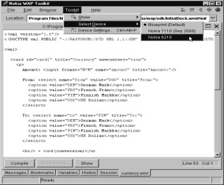

1
Basics of WML
There are a few assumptions
that we must make before we go ahead. The first is that you would like to make
a difference to the world. We assume that you are some genius who has the next
best solution to the world economic crises. We also assume that your word will
be law, as soon as you have spoken it. And finally, we assume that perhaps, you
may want to learn to use and write programs in WML. We are of course, assuming
that you know WML stands for Wireless Markup Language.
Please do not ask us to
explain why a language should be known as wireless. We tried finding an answer
to this. But after searching and researching 3,721 languages, we concluded that
all languages come without wires. We can only therefore assume that the people
who first wrote this language started doing so with wires. Later, when they ran
out of wire, they used words and signs to communicate. And having found this
much easier, they stuck with it. We also figured it was known as a markup
language, simply because each time someone added a new word in, the whole
language was 'marked' up in price and status. It was more refined and a cut
above the rest. Only dim-witted people would use older languages. (And this
still happens today even though an older language could be more effective and
simpler to use.)
Seriously though, we do
assume that you already know how to compile and run the smallest WML program
using the Nokia Toolkit, we would like to start from the very beginning.
This chapter covers the
basics of WML using the Nokia Toolkit
ver 2.1. The toolkit can be downloaded off the Nokia site. The approx. size is
16.7 MB. Alongwith the Toolkit, we want you
to download the simulators, you can choose between the 7110 or 6210
simulator. These files are 3.3 MB and 7
MB large respectively. Since many of you will be working alone, we have
included a generous helping of screenshots so that you can keep pace with us.
We started experimenting with WML and WMLScript using the Toolkit ver 1.5 and
Nokia 6150 simulator, which were bundled in one. We will show you a few screens
from Toolkit ver 1.5 here which differ
from the current toolkit as they helped us understand many concepts in greater
detail. By default, we will display the screens captured from device 6210; even
though Blueprint is a better choice. So put on your shoes and start walking for
we are going to take you on a journey through the wireless world.
Logon to the Nokia site,
register yourself and download the Toolkit and the simulators. Install them on
you computer, first the Toolkit and then the 6210simulator. Once done, you will
see a Program Group by the name of Nokia Wap Toolkit. Select WAP Toolkit as
shown in Fig 1.1.
|
Screen 1. 1 |
This will launch the toolkit
written in the Java Programming Language and display the initial screen as
shown in Fig 1.2 and Fig 1.3. Since it is a Java program, have your display
configured to 256 colors or else you will see your program crash.
|
Screen 1. 2 |
Screen 1. 3 |
Once the Toolkit is loaded,
you will be greeted with two windows, one is the editor and the other is the
Blueprint of a Mobile phone.
As we have downloaded and
installed the 6210Simulator, we will make it the current device to operate on.
To do so, select the menu options as
shown in Fig 1.4
|
 |
|
||
|
Screen 1. 4 |
|
Notice the change in the
mobile window. You may see the mobile as we have shown you or it may be a bigger device.
We will now change the
settings of this device to our own computer, so follow the screens from Fig
1.6 to
Fig 1.9
|
Screen 1. 6 |
When you come to the
Profile box, the option of Wap Server
Simulation is already selected. When
you click on the triangular button, some more options are displayed.
|
Screen 1. 7 |
Screen 1. 8 |
|
Screen 1. 9 |
The WAP gateway program
receives and verifies the content
received from the WAP browser whereas Homepage refers to the web page that the
browser should pickup when it starts
on. Since we are not going to access any site while experimenting with code, we
create our own profile where the gateway and homepage point to our local
harddisk. In case you have any web
server installed on your computer, like in our case, we have the Apache web
server installed, the default page of this server gets displayed on the mobile
screen.
Now let's start by creating
a new wml file. Click on File - New - WML Deck.
A window opens up displaying
a program written by Nokia. This is shown in Fig 1.10 and Fig 1.11.
|
|
|
|
Screen 1. 10 |
Screen 1. 11 |

As you go through this
book, you will find that the development environment has many features built in
to simplify the task ahead. And while this is real cool, it does not really
help you understand what goes on behind the scenes. Our mission is to ensure
that you learn while reading this book.
Since we will be writing
our own program, we select the Nokia written text and delete it. We start with
an empty screen as shown in Fig 1.12.
|
Screen 1. 12 |
Screen 1. 13 |
Click on the Compile button
and you will be prompted for a name. This is shown in Fig 1.13
As usual, we recommend that
you follow the more unconventional approach, which will make it easier for you
to locate the file later. The concept of
LongFileNamesThatClearlyDefineWhatTheFileis really does not make sense in the
long run, especially when you have a few zillion small programs.
Our naming convention makes
it easy for many students and staff to locate the file they want quickly. No complications and no searching. In all
the chapters, we have the filename as
a11.wml. It is very simple to locate this file as it is the first file in the
list. Simple?
If you look at your screen
and Fig 1.14, you will find an error box which has an extremely cryptic
message. It doesn't make sense.
|
Screen 1. 14 |
In the Nokia Toolkit ver
1.5 we had an option of Preferences under the
Toolkit menuoption. On clicking the second tab - Encoding and unchecking
Use Fast Encoding, we could see error
messages that made sense, or more English-Like. Alas this option is not present
any more in the newer versions.
|
Screen 1. 15 |
Screen 1. 16 |
The error messages we received
in Toolkit ver 1.5 are as shown below.
|
Screen 1. 17 |
|
Screen 1. 18 |
This goes to prove that every
deck must begin with an XML instruction
and should also contain a Document Type Definition
A markup language - WML
- is not a full fledged programming
language. It is an English-like language and performs two jobs. Firstly, it displays output in a browser. Here, the
browser is the mobile phone’s screen,
usually called a micro-browser but we will refer to it as the User-Agent
or UA. After all, you must remember that you are learning something new in
computers. And one of the primary rules of becoming a good computer person is
to use as many acronyms as possible. This ensures that anyone else who is not a
computer crazy nutcase looks at you in awe. The second job is to provide a
user-interface to bring in interactivity with the browser.
Markup languages have to
follow some rules, regulations, -policies that define the keywords you can use
and the options within them
To put it simply, a markup
language sets the rules that will be adhered to by another language, eventually
becoming a sub-set of it. XML (eXtensible Markup Language) is a good example of
this. It has many functions and we list them in order of priority. XML is used
1) to change the color of the sky using a 16 million color palette, 2) to
promote world peace in 7,355,291,583 languages and dialects, 3) to eradicate
poverty, 4) to tell you how intelligent Vijay Mukhi is, and 5) the least
important one: to let you write other markup languages.
WML is a markup language
that has been written in XML, hence it follows the rules of XML. Other than
this resemblance, WML has nothing to do with XML.
Following the first rule of
XML, every document in XML should start with a < sign, followed by a ?. Then
you write xml leave a space and end it
with version="1.0" ?>. You ought to follow these rules or else
programs won’t work.
You could also sit down and
write a long letter about the stupidity of such a rule as we are still stuck
with version 1.0 for ages, but we recommend that you don't. For after you
finish this book, you will have joined the group of computer geniuses, and what
ever a genius says is right. No matter how stupid. So just imagine that power
you will have shortly and go along. If
you would still like to do so, then find some of the many sites on the Internet
that are devoted to XML and argue with them. You could also find out at that
point when, if ever, will there be a version 2, or if there will even be a
version 1.1 or 1.0.0.1a. Write the xml instruction in your program. This is shown below.
|
Screen 1. 19 |
Henceforth we will not show
you the editor with the program but
instead will give you the program code as
a11.wml
<?xml version="1.0"?>
HTML, which is what the
Internet is written in (colloquially), has been written using XML. This is why
many Internet experts believe that XML will change the way one works on the
Internet.
In future, XML will be used
to write other Internet compatible markup languages.
Anything that begins with a
<? is a processing instruction. Every micro browser looks at this line hence
it is mandatory. This processing instruction line has to be placed on the first
line.
Click on the Compile option
and you will now get another error, a different one. This is shown in Fig 1.20.
|
Screen 1. 20 |
And it is only by failing that
you will succeed. That is, if you remember every one of the errors you made.
Most guys don't anyways, which is why their girls get mad.
The error appears because
the micro browser expects the second line to have a DTD. The second line has to
start with a <! and not <?. The word DOCTYPE has to follow the !
sign. Enter the following lines and
then compile it to see one more error.
a11.wml
<?xml version="1.0"?>
<!DOCTYPE wml PUBLIC "-//WAPFORUM//DTD WML 1.1//EN" "http://www.wapforum.org/DTD/wml_1.1.xml">
|
|
|
Screen 1. 21 |

After DOCTYPE we have
‘wml’. Wml is the document root. This implies that the first tag (a word
enclosed within a < and a > sign) in your file should be wml i.e.
<wml>;
A document root is the
starting point of a file. So our entire wml file will be within the <wml>
tag. We then have PUBLIC followed by some characters. You can write any text
here, we could have given vijay as shown below.
<!DOCTYPE wml PUBLIC "vijay" "http://www.wapforum.org/DTD/wml_1.1.xml">
DOCTYPE and DTD both have a
similar meaning. DTD stands for Document Type Definition. The DTD is the heart
and soul of XML. It is the DTD that forms the basis of other markup languages
and it is a major part of XML It specifies the rules describing what a markup
language should look like and what constraints it operates under. Words that
come after PUBLIC inform the user agent
about the site address or the location of the DTD. The UA locates it, reads it
and the rest of the document follows the rules mentioned therein. In one of the
chapters we will write our own DTD.
Vijay is called the public
identifier and it refers to the location of the DTD. Most books would explain
DTD 500 pages towards the end, but we prefer to do it now. If, for example, we
write vijay, the browser or user agent may not know what vijay is. It may not
know the server address on which it resides. Hence, the next word following
vijay is a url - site address. If the
PUBLIC identifier, vijay, is not recognized, the DTD will be picked up from the
specified site on the Internet.
Usually, it is the WAP
forum site that is responsible for all of WAP. This file wml_1.1.xml can be downloaded to your local directory.
We repeat ourselves, we get
an error because we haven't started the document with the root element. It
expects wml within angle brackets in the document
a11.wml
<?xml version="1.0"?>
<!DOCTYPE wml PUBLIC "-//WAPFORUM//DTD WML 1.1//EN" "http://www.wapforum.org/DTD/wml_1.1.xml">
<wml>
You will see another error.
Wml has to follow the rules of XML and the rules say that every element must
have a start and an end. If you start with a tag, then you must end it. To end
wml, put wml within <>, that is <wml>, but this time add a slash
before the wml, like </wml>.
|
|
|
Screen 1. 22 |

This end tag was missing therefore
an error was reported. If you had been an HTML programmer, you would curse this
language as HTML is not so finicky.
a11.wml
<?xml version="1.0"?>
<!DOCTYPE wml PUBLIC "-//WAPFORUM//DTD WML 1.1//EN" "http://www.wapforum.org/DTD/wml_1.1.xml">
<wml>
</wml>
In theory, this should be
the smallest program you could write. However, it is not. After all, everybody
born has some intelligence. And the guys who wrote the DTD felt that even in
WML, one should have at least one element to make it an intelligent language.
Hence you see the error.
|
Screen 1. 23 |
We therefore add card as an
element. Card is taken to be an element
tag within wml.
With the addition of card
to the last program, you now finally have the smallest program that can be
written because it follows the rules of DTD.
It shows no errors
.
|
Screen 1. 24 |
a11.wml
<?xml version="1.0"?>
<!DOCTYPE wml PUBLIC "-//WAPFORUM//DTD WML 1.1//EN" "http://www.wapforum.org/DTD/wml_1.1.xml">
<wml>
<card>
</card>
</wml>
If you have been following all
that we have done so far, you will have understood by now that we are offering
you two courses simultaneously. Not only are you learning WML, but you are also
learning XML as well.
If you now click on the
Show button which is next to the Compile button you will see a blank screen.
Nope, not the computer screen, but the screen on the mobile phone Fig 1.24.
Gosh! Do we have to explain everything to you?
Well, that's just great!
After all that you keyed in, and everything else you did to write your first
error-free program, nothing happens!
Let's add the word Hell
between <card> and </card>.
a11.wml
<?xml version="1.0"?>
<!DOCTYPE wml PUBLIC "-//WAPFORUM//DTD WML 1.1//EN" "http://www.wapforum.org/DTD/wml_1.1.xml">
<wml>
<card>
Hell
</card>
</wml>
If you try compiling this,
you will get an error as displayed in Fig 1.25. Hell is just the right place
where you would like to send the guys who wrote XML. But forget your anger for
just a while, and try to understand what this is all about.
|
Screen 1. 25 |
The error is because of the
DTD. The DTD or syntax of WML state that
character data (text) cannot be placed
between <card> and </card>. So who are we to argue? We'll
simply use another tag called <p> or paragraph. The paragraph tag
<p>... </p> amongst many other things allows you to put text within
it. Remember that <...> starts
and </...> ends the tag.
|
Screen 1. 26 |
a11.wml
<?xml version="1.0"?>
<!DOCTYPE wml PUBLIC "-//WAPFORUM//DTD WML 1.1//EN" "http://www.wapforum.org/DTD/wml_1.1.xml">
<wml>
<card>
<p>
Hell
</p>
</card>
</wml>
In case you have a small
screen and would like to resize it, you can do so by selecting the Device
Settings menuoption in Toolkit. Click on the Appearance tab and select one of
the options.
|
|
|
||
|
Screen 1. 27 |
|

You could do more than one paragraph
at a time, depending upon what text you would like to display, and the points
that you may want to make. We've only used two, but don't let this stop you.
Only thing that you may have to bear in mind is the size of the display screen,
which on a mobile phone is not really large.
|
|
|
Screen 1. 29 |

a11.wml
<?xml version="1.0"?>
<!DOCTYPE wml PUBLIC "-//WAPFORUM//DTD WML 1.1//EN" "http://www.wapforum.org/DTD/wml_1.1.xml">
<wml>
<card>
<p>
Hell
</p>
<p>
Bye
</p>
</card>
</wml>
The Hell and Bye come on
two different lines. The <p> tag stands for paragraph break in HTML.
Now that you know you can
have multiple <p> tags, lets go a step further. We now say Hell and then
Bye. If you notice between the Hell and the Bye, there are many spaces. This
has been done to prove a point. Again, press Enter and write No on a new line
as in the following program.
|
Screen 1. 30 |
a11.wml
<?xml version="1.0"?>
<!DOCTYPE wml PUBLIC "-//WAPFORUM//DTD WML 1.1//EN" "http://www.wapforum.org/DTD/wml_1.1.xml">
<wml>
<card>
<p>
Hell Bye
No
</p>
</card>
</wml>
Click on Compile and then
Show. You will observe that Nokia not only has eaten up all the spaces that
were between Hell and Bye but has also swallowed the Enter that defined a new
line. No is displayed on the same line as Hell and Bye.
If you think this is some
sort of mistake, then separate the Bye and No with as many Enters as you like
and re-compile. You will see the same result.
How do you get to a new
line then? Well, you already know of one way - using separate <p> tags.
But this can be rather taxing. You can get about the same result by using the
<br> tag. Remember, that all good things come in pairs, so you will have
to add a </br> right after the <br> tag as there will be nothing
between the two. Try this out, as in the program you see below and No will move
to a new line.
|
Screen 1. 31 |
a11.wml
<?xml version="1.0"?>
<!DOCTYPE wml PUBLIC "-//WAPFORUM//DTD WML 1.1//EN" "http://www.wapforum.org/DTD/wml_1.1.xml">
<wml>
<card>
<p>
Hell Bye <br></br>
No
</p>
</card>
</wml>
Like br, you will find many
tags which have no content within them. And as in this case, it would therefore
make sense to simply use the <p> tag again because you would be keying in
less. Using the p tag you’d key in a total of 6 characters, while with the br
tag in the way it is used, you need to key in 8. A simpler way of using tag
that have nothing between them is to place the slash at the end of the first
tag. In place of <br> and </br>, you enter <br/>.
a11.wml
<?xml version="1.0"?>
<!DOCTYPE wml PUBLIC "-//WAPFORUM//DTD WML 1.1//EN" "http://www.wapforum.org/DTD/wml_1.1.xml">
<wml>
<card>
<p>
Hell Bye <br/>
No
</p>
</card>
</wml>
A / at the end is a better
way of representing elements that have no content. An element can either have a
start and an end tag or a single tag with a / at the end to indicate no
content.
A mobile screen can display
3 lines or maybe 4 lines, or a maximum of six lines. A pager has even less
area. The Personal Digital Assistant (PDA) may have a lot more lines, so how do
you fit all this in? In the next example, we have added 6 lines to show you
that you can scroll. How do you see a scroll? Some devices may show you a curly
arrow at the top of the display screen.
a11.wml
<?xml version="1.0"?>
<!DOCTYPE wml PUBLIC "-//WAPFORUM//DTD WML 1.1//EN" "http://www.wapforum.org/DTD/wml_1.1.xml">
<wml>
<card><p>
Hell how <br/> bye <br/> no <br/> good <br/> hell <br/> <br/> bad
</p>
</card>
</wml>
|
|
You can use the up and the
down arrow keys to scroll. Of course, you understand that you need not restrict
yourself to just 6 six lines. It could be much more. Do remember, that if you
have too much to scroll through you may forget what you started with.
It is now time to make
things look a little pretty. We have got past a simple display, and there is a
good deal more that we can do to highlight the text in the display. WML has got
tags for bold, italic, underline, emphasis, strong, small and big which perform
this job.
a11.wml
<?xml version="1.0"?>
<!DOCTYPE wml PUBLIC "-//WAPFORUM//DTD WML 1.1//EN" "http://www.wapforum.org/DTD/wml_1.1.xml">
<wml>
<card>
<p>
<b> Bold </b> <br/>
<i> Italics </i> <br/>
<u> Underline </u> <br/>
<em> Em </em> <br/>
<strong> Strong </strong> <br/>
<small> Small </small> <br/>
<big> Big </big> <br/>
</p>
</card>
</wml>
|
|
This feature was enabled in
Nokia 6150 and then disabled in 6210 and 7110. It is now again enabled in 9110i
series If you really need to check on these features, you can change you
default device to Blueprint.
Rule one in the mobile
display game, is what you see is not what you get. This is not because there is
no standardisation of the language, but more because different service
providers interpret in conjunction with their own hardware.
There is no rule defining
the size of a small, big or a strong
display because certain devices may just not be able to display it. Nokia 6210
shows no change in output. It is not specified by WAP nor by the WML
specification. What is defined, are the tags and the elements. Here we are
first focusing on Nokia screens. Once you understand the workings of one
product, then shifting onto the other will not be difficult.
In the next example the
<p> tag has got a word called align.
|
Screen 1. 36 |
a11.wml
<?xml version="1.0"?>
<!DOCTYPE wml PUBLIC "-//WAPFORUM//DTD WML 1.1//EN" "http://www.wapforum.org/DTD/wml_1.1.xml">
<wml>
<card>
<p align="left">
No
</p>
<p align="center">
Hi
</p>
<p align="right">
Bye
</p>
</card>
</wml>
The word align here is an
attribute and it can be applied to an element tag. Elements have attributes in
their start tags and they are assigned
values. Align has a value of left. An empty tag can also have an attribute.
An attribute basically is a
qualifier. It is very different from the content because the content is within
the open tag and close tag. The attribute qualifies or better defines the
element. For example, within the p tag there is text. We may want to align this
text either towards the left, right or centre. This is what we have
demonstrated in the example above.
The align attribute is
optional, you will see no errors if it’s not used. The default value is left.
Every new p tag automatically sets align to the left. There are other tags where
the attributes have to be stated. Align
can have only three values, left, right or center. It cannot take any more
values. (Please do remember also that the computers often understand only
American, and not English, so centre is center when it comes to the attribute.)
If you have a lot of text
written on one line, it will automatically move on the next line. This is
because the default mode is wrap. But if you set the mode="nowrap",
it will not wrap around. The browser or the user agent will provide the user
with an option to scroll left or right. This feature is disabled in the new
devices.
|
Screen 1. 37 |
a11.wml
<?xml version="1.0"?>
<!DOCTYPE wml PUBLIC "-//WAPFORUM//DTD WML 1.1//EN" "http://www.wapforum.org/DTD/wml_1.1.xml">
<wml>
<card>
<p mode="wrap">
Hi how are you i am fine
</p>
<p mode="nowrap">
Hi how are you i am fine
</p>
</card>
</wml>
There are many more
attributes that <p> tag can take. We have only shown you two so far. We
move on to the next program. Here we will show you how to display text in a
table.
a11.wml
<?xml version="1.0"?> <!DOCTYPE wml PUBLIC "-//WAPFORUM//DTD WML 1.1//EN" "http://www.wapforum.org/DTD/wml_1.1.xml">
<wml>
<card>
<p>Hi
<table title="bye" >
<tr></tr>
</table></p>
</card>
</wml>
|
Screen 1. 38 |
Tr stands for table row. The
column attribute is most important because there is no point creating a table
that has rows but no columns. The error confirms this point. In the next
program, we have used a tag called table. Set the title to bye and define two
columns using td.
|
Screen 1. 39 |
a11.wml
<?xml version="1.0"?>
<!DOCTYPE wml PUBLIC "-//WAPFORUM//DTD WML 1.1//EN" "http://www.wapforum.org/DTD/wml_1.1.xml">
<wml>
<card>
<p>Hi
<table title="bye" columns="2">
<tr><td>aa</td><td>bbbb</td></tr>
</table>
</p>
</card>
</wml>
When you click on Show, the
title doesn't get displayed. Which means that even though title is given, the
Nokia phone may decide not to show the title but some other devices may show
it. Where our title is displayed, only God knows.
When defining attributes,
it does not matter which one comes first as long as you satisfy all the
requirements of the tag. If you miss something out you will get an error.
Even though the column
attribute is to be given a number, you do not enter it in as a number 2. It is
always placed in double quotes. All attributes, whether they are numbers or
letters of the alphabet or anything, are always placed between a pair of double
quotes.
We first use the tag
<table> and if you notice there is a </table>. Spaces do not
matter. We now have something called <tr>. Tr means table row. A </tr> means end of table row. Tr
starts and ends a row. The tags <tr> and </tr> cannot be used with
any other tag than in a table definition.
A row contains
columns. But we do not have a tc here
for a table column. The column delimiter in
this case is td. A </td> ends the column. In the first column we
enter aa; the second column will have bbbb.
The column width depends on the size of the column text. The first one is two bytes and the next one
is four bytes. At this point, we cannot change the width of every column. It is
the text that decides this.
In the next program, we
have given two rows.
|
Screen 1. 40 |
a11.wml
<?xml version="1.0"?>
<!DOCTYPE wml PUBLIC "-//WAPFORUM//DTD WML 1.1//EN" "http://www.wapforum.org/DTD/wml_1.1.xml">
<wml>
<card>
<p>
Hi
<table title="bye" columns="2" align="right">
<tr><td>aa</td><td>bbbb</td></tr>
<tr><td>c</td><td>dd</td></tr>
</table>
</p>
</card>
</wml>
There is only a small
difference. The first row remains the same and in the second row we have added
c to the first column and then dd in the second. We now have 2 rows and 2
columns. The largest column becomes the width of the column. Even though we
have said align=right, it doesn't work here.
It is also possible to
enter null values in a cell. That is to say, if you enter a <td>
</td>, it is allowed. The third row has a blank column
|
Screen 1. 41 |
a11.wml
<?xml version="1.0"?>
<!DOCTYPE wml PUBLIC "-//WAPFORUM//DTD WML 1.1//EN" "http://www.wapforum.org/DTD/wml_1.1.xml">
<wml>
<card>
<p>
<table title="bye" columns="2" align="right">
<tr><td>aa</td><td>bbbb</td></tr>
<tr><td>c</td><td>dd</td></tr>
<tr><td/></tr>
<tr><td></td><td>dd</td><td>e</td><td>f ff</td></tr>
</table>
</p>
</card>
</wml>
This means that in a table
you can have a null column and a null row. It also means that null columns and
null rows are counted. Null means there is no text there, but it still has a
value as far as the program is concerned.
In the fourth row, instead of two columns you add 4 tds, the first two
columns will be displayed properly, but the remaining ones will be deleted. The
first row decides on the no. of columns. The Blueprint device will show you a
different result.
You cannot specify the
width of a column, nor can you specify the inter-column width. Multiple spaces
between the words are automatically removed.
|
Screen 1. 42 |
a11.wml
<?xml version="1.0"?> <!DOCTYPE wml PUBLIC "-//
WAPFORUM//DTD WML 1.1//EN" "http://www.wapforum.org/DTD/wml_1.1.xml">
<wml>
<card>
<p>
<table title="bye" columns="2" align="right">
<tr><td>aa</td><td>bbbb</td></tr>
<tr><td>cc</td><td>f<br/>ff</td></tr>
</table>
</p>
</card>
</wml>
If you want you can add a
br within a column, and it will display the remainder text on a new line. This is not seen in the current device but
is clearly visible with Blueprint.